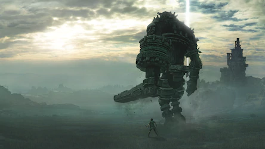

¡BIENVENID@!
Bienvenido/a a nuestra página web dedicada para esas personas que estan interesadas en este magnífico juego :)
El juego trata de un joven, conocido únicamente como Wander (del inglés wanderer, 'alguien que deambula'), que debe viajar a caballo a través de un vasto territorio y derrotar a 16 gigantes, conocidos colectivamente como «Colossi» («colosos» en español) para devolver la vida a una joven.
El juego es inusual entre los videojuegos de acción-aventura por el hecho de que no hay pueblos o calabozos para explorar, no hay personajes con los que interactuar y no hay otros enemigos a los que enfrentarse aparte de los colosos.
